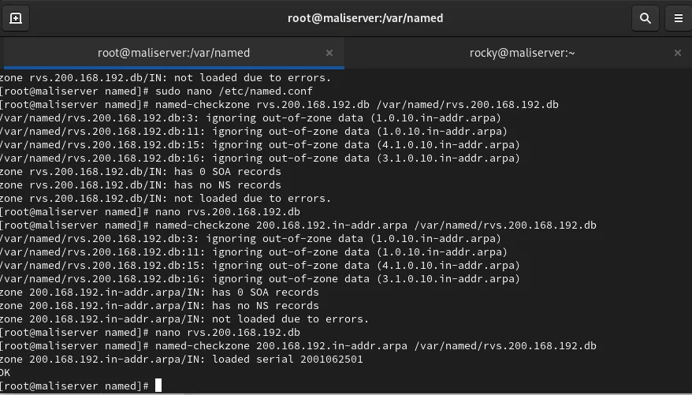
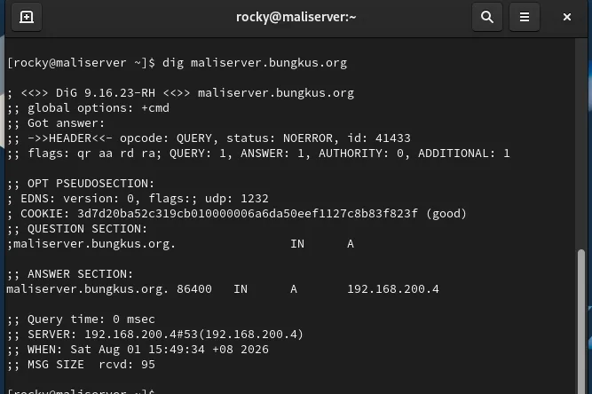

DNS was the first chapter of my group's server assignment, and everything after it, mail and web, depends on it. The goal was simple to say: make maliserver.bungkus.org and maliclient.bungkus.org resolve to each other, both forward (name to IP) and reverse (IP to name). The one real obstacle was a badly prepared reverse zone file. The lab was a Rocky Linux server at 192.168.200.4 and an Ubuntu client at 192.168.200.3, with a made-up domain, bungkus.org.
Install and start BIND
On Rocky the package is bind, and the service is called named. I installed it, enabled it, and backed up the default config before editing anything.
sudo dnf install -y bind bind-utils
sudo systemctl enable --now named
sudo cp -p /etc/named.conf /etc/named.conf.baknamed.conf: options and two zones
For the lab I let named listen on every interface and answer any client. That is fine on a closed lab network and a bad idea on a public server. Then I declared two zones. The forward zone is just the domain. The reverse zone is the network written backwards: for 192.168.200.0/24 it is 200.168.192.in-addr.arpa.
zone "bungkus.org" IN {
type master;
file "forword.bungkus.org.db";
allow-update { none; };
};
zone "200.168.192.in-addr.arpa" IN {
type master;
file "rvs.200.168.192.db";
allow-update { none; };
};Yes, my file name has a typo ("forword"). It still works, because BIND matches the file by the exact name in named.conf, not by what it ought to be called. If you misspell it in one place and not the other, the zone will not load.
The zone files
Both files live in /var/named. The forward file needs an SOA record, an NS record and A records for the two hosts. The reverse file needs the SOA, the NS record and PTR records that map the last octet back to a name: 4 points to the server, 3 to the client. I built the reverse file from a sample template, and that is where my problems started.
The reverse zone that would not load
I validated with named-checkzone and got a wall of errors: "ignoring out-of-zone data" for addresses like 1.0.10.in-addr.arpa, then "has 0 SOA records", "has no NS records" and finally "not loaded due to errors."

There were two causes. First, the sample file I started from still had records for an unrelated 10.x network, which do not belong in a 192.168.200 reverse zone, so BIND ignored them. With those ignored there was no SOA and no NS record left, which explains the next two errors. Second, my very first check used the file name as the zone name argument. The syntax is named-checkzone <zone-name> <file>:
named-checkzone 200.168.192.in-addr.arpa /var/named/rvs.200.168.192.dbI deleted the leftover records, wrote a proper SOA, an NS record and the two PTR records, and re-ran the check with the correct zone name until it printed "loaded serial 2001062501" and OK. The forward zone passed on the first try.
Firewall and restart
DNS uses port 53 over both UDP and TCP, so I opened both and reloaded firewalld:
sudo firewall-cmd --permanent --add-port=53/udp
sudo firewall-cmd --permanent --add-port=53/tcp
sudo firewall-cmd --reload
sudo systemctl restart namedRight after each restart, the log showed "network unreachable resolving" messages for the root servers. They looked scary, but they are just BIND trying to prime its cache before it can reach the outside world. Once the zones loaded and the firewall was open, the service reported everything loaded and running, and the messages did not stop anything from resolving.
Testing from the server and the client
On the server I used nslookup, ping and dig against both names. The dig output showed an ANSWER SECTION with the right address, answered by 192.168.200.4 on port 53.

On the Ubuntu client I enabled systemd-resolved, then set DNS=192.168.200.4 8.8.8.8 under [Resolve] in /etc/systemd/resolved.conf, so the lab server is asked first and a public resolver is the fallback. nmcli confirmed both DNS servers on the interface, and nslookup and ping by name worked from the client. I had also removed the static entries from /etc/hosts beforehand, otherwise a test could succeed without DNS doing anything.
Checklist if your zone will not load
- Run
named-checkzonewith the zone name first and the file second. - Make sure the file name in
named.confmatches the real file exactly. - Look for leftover records from a template, especially in reverse zones.
- Increase the SOA serial every time you edit a zone, then restart or reload named.
- Open 53/tcp as well as 53/udp.
This zone file kept growing in later chapters: the mail server added an MX record and the web server added an A record for the intranet site.